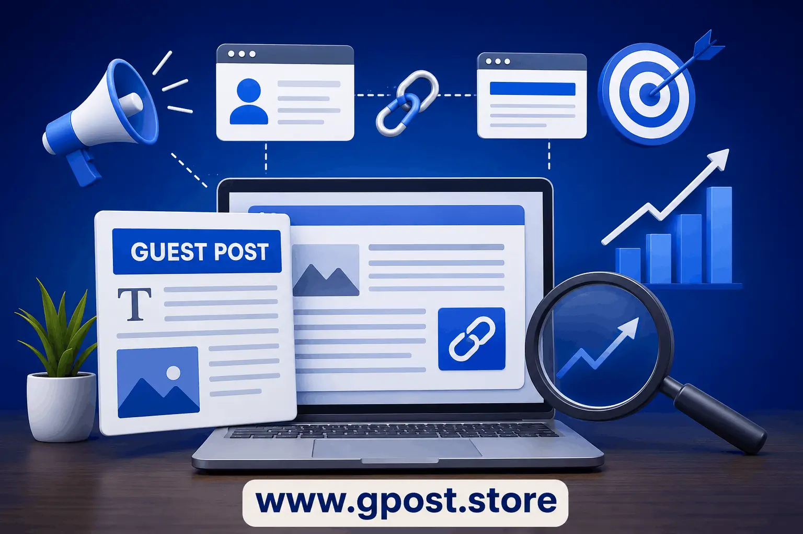

How to get backlinks through guest posting step by step
How to get backlinks through guest posting step by step is one of the most powerful SEO strategies used by marketers in 2026 to build authority, improve rankings, and grow organic traffic. If your website is struggling to appear on the first page of Google, the missing ingredient is usually not content—it is high-quality backlinks from relevant websites. Guest posting solves this problem by allowing you to publish valuable content on other websites while earning contextual links back to your own domain.
In today’s competitive SEO environment, Google heavily evaluates trust signals, topical relevance, and editorial backlinks. This means random link building no longer works. You need structured outreach, strong content positioning, and a clear understanding of how link placement influences domain authority. In this guide, you will learn a complete breakdown of the guest posting process for link building explained in a practical and scalable way.
We will also explore how to use guest blogging to earn quality backlinks, what type of backlinks you get from guest posts, and how beginners can avoid common mistakes that waste time and resources.
What Is How to get backlinks through guest posting step by step?
Guest posting is a white-hat SEO strategy where you write and publish articles on external websites in exchange for a backlink to your own website. These backlinks are usually placed within the content body and help improve your website’s authority, rankings, and visibility in search engines.
In simple terms, you create useful content for another website’s audience, and in return, you receive an editorial link. This method is widely used because it is natural, safe, and highly effective when done with niche relevance. For example, a digital marketing blog may publish an article on an SEO agency website and include a backlink inside a case study section.
Over time, guest posting has evolved from simple blog exchanges into a strategic link-building system that focuses on authority building, relationship development, and content marketing synergy.
Why How to get backlinks through guest posting step by step Matters for SEO in 2026
Guest posting remains a core SEO strategy in 2026 because search engines continue to prioritize authoritative and relevant backlinks as a major ranking factor. Without backlinks, even high-quality content struggles to rank.
According to Ahrefs, more than 90% of web pages receive no organic traffic due to lack of backlinks. This highlights the importance of structured link building campaigns.
- Improves domain authority and website trust
- Boosts keyword rankings in competitive SERPs
- Drives targeted referral traffic from niche audiences
- Strengthens brand visibility and authority signals
A common insight from SEO professionals is that niche relevance now matters more than raw domain authority. This is why guest posting continues to outperform many other link-building methods.
Types of How to get backlinks through guest posting step by step
Free / Organic Guest Posting
Free guest posting involves contributing content to blogs that accept articles without payment. These sites are usually content-driven and accept submissions to grow their publishing volume.
- Pros: Cost-effective, beginner-friendly
- Cons: High competition, slower approval rate
Paid / Sponsored Guest Posts
Paid guest posts involve paying for placement on websites with established authority. This guarantees faster publishing but requires budget investment.
- Pros: Guaranteed placement, faster results
- Cons: Higher cost, requires careful site selection
Niche Blog Outreach
This method focuses on reaching blogs within your exact industry. It is one of the most effective strategies for long-term SEO growth.
- Pros: Highly relevant backlinks, strong SEO impact
- Cons: Requires manual outreach effort
Editorial / Authority Sites
These are high-authority media websites that accept guest contributions selectively.
- Pros: Maximum authority boost
- Cons: Difficult acceptance process
How to Find How to get backlinks through guest posting step by step Opportunities
Finding guest posting opportunities requires a combination of search operators, competitor analysis, and SEO tools. The goal is to identify websites that are actively accepting guest contributions and have real organic traffic.
Use these Google search operators:
- "write for us" + your niche
- "guest post guidelines" + keyword
- "submit article" + industry
- "become a contributor" + topic
Competitor backlink analysis is another powerful method. Tools like Ahrefs and SEMrush allow you to reverse-engineer competitor backlinks and discover hidden guest posting opportunities.
- Ahrefs for backlink analysis
- BuzzSumo for content discovery
- SEMrush for competitor research
A complete workflow is explained in How to do outreach for guest posting for scalable campaigns.
Step-by-Step How to get backlinks through guest posting step by step Strategy
1. Niche Research & Target Identification
The first step is identifying websites that match your niche. Relevance is more important than domain authority. A smaller niche blog often delivers better SEO results than a large unrelated website.
2. Prospect Qualification
Evaluate websites based on domain authority, organic traffic, and spam score. Avoid websites with fake metrics or irrelevant content because they can harm your SEO.
3. Personalized Outreach
Send personalized emails instead of generic templates. Mention specific articles from their blog and explain why your content adds value.
Learn advanced techniques in Guest Posting Outreach to increase response rates.
4. Content Creation & Pitch
Create high-quality content that solves real problems. Editors prefer value-driven content over promotional articles.
5. Link Placement & Anchor Strategy
Use natural anchor text variations. Avoid keyword stuffing. Mix branded, generic, and contextual anchors for safety.
For deeper systems, explore Guest Post Link Building strategies used by SEO professionals.
6. Track, Measure & Scale
Track all guest post backlinks using spreadsheets or SEO tools. Measure ranking improvements and referral traffic to optimize future campaigns.
Common Mistakes to Avoid
- Spammy websites → leads to ranking penalties → always check quality
- Over-optimized anchor text → triggers Google filters → use natural variations
- Generic outreach emails → low response rate → personalize every message
- Irrelevant niche links → weak SEO impact → stay industry-focused
- Ignoring metrics → wasted effort → analyze traffic and authority
Pro SEO Tips for Maximum Results
Advanced link-building success depends on long-term relationship building and strategic optimization.
- Use anchor text diversity to maintain natural link profile
- Build internal links after receiving guest post backlinks
- Focus on niche relevance for stronger SEO signals
- Build relationships with editors for recurring placements
Is How to get backlinks through guest posting step by step Still Worth It in 2026?
Yes, guest posting is still one of the most effective SEO strategies in 2026 because it aligns with Google’s focus on authority, relevance, and editorial trust.
Compared to other link-building methods, guest posting provides a balanced mix of safety, scalability, and long-term SEO value.
- Guest Posting: High ROI, low risk
- PBN Links: High risk, short-term gains
- Directory Links: Low impact
- Paid Ads: No SEO value
When to Avoid How to get backlinks through guest posting step by step
Avoid guest posting when websites show spam signals or lack real organic traffic. Low-quality backlinks can reduce your domain trust.
- Sites with irrelevant content
- Blogs with spam outbound links
- Fake traffic or metrics
- Over-optimized link farms
Image Section

Guest posting process for link building explained with outreach strategy and backlink placement workflow
FAQs
What is guest posting in SEO?
Guest posting is publishing content on external blogs to earn backlinks and improve search engine rankings through authority building.
Why is guest posting important?
It builds domain authority, increases organic traffic, and improves keyword rankings through contextual editorial backlinks.
What is the biggest mistake in guest posting?
Using irrelevant or spammy websites, which reduces SEO value and may trigger search engine penalties.
Guest posting vs niche edits?
Guest posting creates new content links while niche edits add links to existing pages; both are useful but guest posting is safer.
How do beginners start guest posting?
Start by finding niche blogs, reading guidelines, pitching topics, and writing high-quality SEO-optimized articles.
Does guest posting improve SEO?
Yes, it improves rankings by building authoritative backlinks and increasing website trust signals.
What tools help guest posting?
Ahrefs, SEMrush, and BuzzSumo help find opportunities and analyze backlink profiles effectively.
Are guest post backlinks strong?
Yes, especially when placed on relevant, high-authority blogs with editorial approval.
What type of backlinks come from guest posts?
Mostly contextual dofollow editorial backlinks placed naturally within content.
Is guest posting still effective in 2026?
Yes, it remains one of the most powerful white-hat SEO strategies for long-term ranking growth.
Conclusion
How to get backlinks through guest posting step by step remains a foundational SEO strategy for building authority, improving rankings, and driving sustainable organic traffic. When executed correctly, it creates long-term value through real editorial backlinks rather than artificial link schemes.
To get started effectively, focus on identifying niche-relevant websites, crafting personalized outreach messages, and producing high-value content that editors actually want to publish. Consistency is key to scaling results over time.
Next steps:
- Build a list of targeted guest posting websites
- Create a personalized outreach system
- Publish consistently and track SEO improvements